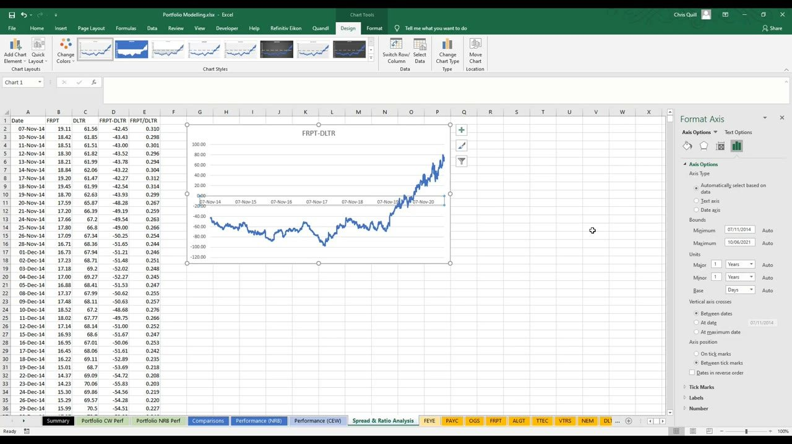
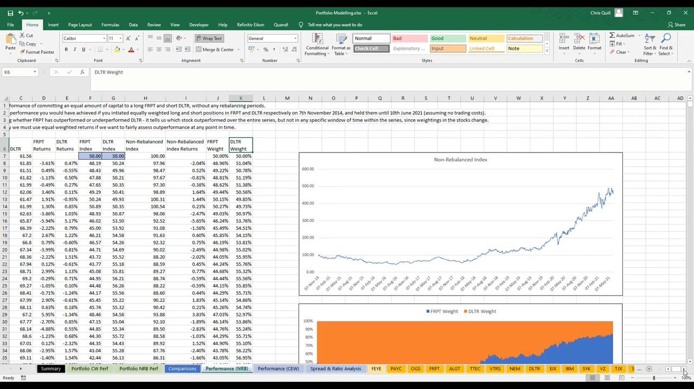
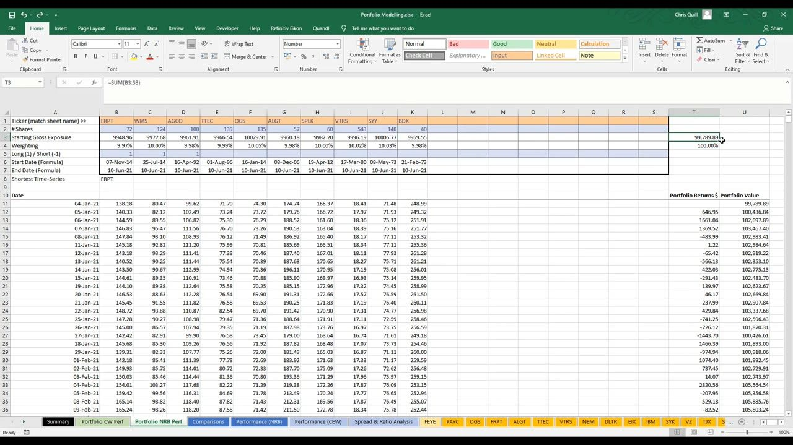

Foundations of Long/Short Portfolio Management 1b
Portfolio modelling in Excel — sourcing price data, measuring a long/short pair four ways (spread, ratio, constant-weight, non-rebalanced), and proving a whole book is just one big spread trade
A hands-on build: download prices, compare two stocks as a spread/ratio, then index a 10-name long/short book — and see that a portfolio is mechanically the same as a single spread trade, so all you need is awesome longs that go up and awesome shorts that go down.
The gist
- A long/short portfolio is mechanically just a scaled-up spread trade: (sum of longs) minus (sum of shorts). You make money when the longs outperform the shorts — longs up more than shorts, or shorts down more than longs.
- The objective is simple to state: fill the book with awesome longs that go up and awesome shorts that go down over a ~1-3 month horizon, positions rotating in and out. Never put a short on merely as a hedge expecting it to rise with a long.
- A pair can be combined four ways, crude to rigorous: SPREAD (A-B, dollar P&L per share-pair), RATIO (A/B, directional gauge only), CONSTANT-EQUAL-WEIGHT (CEW, rebalanced each period) and NON-REBALANCED (NRB, buy-and-hold). Never read percentage returns off the ratio — it exaggerates.
- CEW is the fairest relative-performance measure (whenever the index rises the long definitely beat the short) but implies impractical daily rebalancing; NRB gives a realistic holding-period P&L but weights drift, so a rising NRB index only proves the long won over the ENTIRE series, not any sub-window.
- Equal-weight sizing is a convenience: capital-per-name = book / number of positions ($100,000 / 10 = $10,000 each), shares = ROUND(10000/price, 0). But a 6-long/4-short book is still 60% long / 40% short overall, so a rising book does not by itself prove the longs beat the shorts.
- Volatility is opportunity: the worked large/mega-cap book made ~7% in H1-2021; swapping the longs for mid-caps lifted it to ~18-19% (unleveraged). This sets up the next lesson on portfolio volatility.
Sourcing and building the price model in Excel
- Download daily OHLC + volume from Yahoo Finance (historical-data tab, max period, daily frequency, Apply, Download); the file opens straight into Excel. Data is ascending: oldest at top, newest at bottom.
- Be flexible with data sources — free sources change or get discontinued, so always understand what a series represents and confirm it is fit for purpose before using it.
- Close vs Adjusted Close: the Close column adjusts only for stock SPLITS; the Adjusted Close adjusts for splits AND dividends. A 2-for-1 split halves price but not holder value; an ex-dividend gap is a payout, not a market move.
- Which to use: for short-horizon trading the difference is tiny, so either is fine; Adjusted Close is slightly more accurate for total-return analysis and matters more over longer horizons with reinvested dividends. Anton prefers Yahoo partly because it exposes Adjusted Close for free.
- Charting: plot the Adj Close series, then add a Moving Average trendline via Format Trendline; series ranges are extended to row 100,000 so charts and formulas auto-update when new price columns (A-G) are pasted over the old.
This is the data-plumbing foundation for the whole workbook. FireEye (FEYE) is used as the worked download example. The overarching rule: understand your data and be happy it fits the analysis.
Spread and ratio trades: comparing two stocks
- A spread trade is long Stock A and short Stock B. The relationship is computed two ways: A - B (a SPREAD trade) or A / B (a RATIO trade). Both are loosely called 'spread trades' in vernacular — ask which someone means.
- Convention: the stock you want to go LONG is written first (minuend / numerator); the stock you SHORT is subtracted / is the denominator. A chart rising left-to-right then means the long outperformed the short.
- SPREAD (A - B, e.g. =B2-C2): the price difference — dollar P&L of long 1 share / short 1 share (equal SHARES). Worked on FRPT (long) vs DLTR (short), the FRPT-DLTR spread ran ~$0 in mid-2020 to ~$60 by early 2021. Accurate in dollars but inflexible on weighting because share prices differ.
- RATIO (A / B, e.g. =B2/C2): the long price as a percent of the short — a directional out/under-performance gauge (line up = long winning) on an equal-DOLLAR basis. Do NOT read percentage returns off it: it exaggerates, ending ~130% higher in level than CEW despite being ~95%+ correlated (a scaling error).
- To align two series, compare only on dates common to both: VLOOKUP(date, table, col, FALSE) with FALSE = exact match, then paste-as-values so the source columns can be deleted.
The point is the concept of PERFORMANCE — one stock, or a basket, outperforming another. Because the ratio only shows direction, two rigorous methods (CEW and NRB) are needed to actually measure percentage returns.

CEW vs NRB: the two rigorous ways to measure a pair
- Per-name daily return: = price_t / price_(t-1) - 1 (e.g. =C3/C2-1). Returns start one row BELOW the prices because the first period has no prior price.
- CONSTANT-EQUAL-WEIGHT (CEW): re-weight both sides equally every period and combine, inverting the short: =(0.5*D3) + (0.5*-E3). This assumes an equal dollar amount committed to each side on every date — the FAIREST relative measure: whenever the CEW index rises, the long definitely outperformed the short.
- CEW is impractical to hold: any price move imbalances the weights, so you would have to rebalance at the start of every period. Fine monthly/quarterly, costly daily. Worked drift: buy 10 FRPT @ $168 = $1,680, short $1,680 of DLTR; if FRPT rises 10% and DLTR is flat, next open you hold $1,848 long vs $1,680 short — no longer equal.
- NON-REBALANCED (NRB): a buy-and-hold long and a short-and-hold, equal capital at the start and never touched again, so weights drift dramatically. Index_t = prior value + change in long index - change in short index (short inverted). FRPT index cell: =F7*(1+D8).
- The NRB catch: because weights drift, a rising NRB index only proves the long beat the short over the ENTIRE series, not any sub-window. FRPT drifted from 50% to ~85% weight over 2014-2021; at 85/15, DLTR could fall 50% (a short win) yet FRPT need only fall ~9% for the net to go negative. Note a position's weight rises as its price rises — for shorts that means the weight grows as you LOSE money.
- Which to use: CEW to judge out/under-performance at any point in time; NRB for realistic holding-period returns and modelling actual trade scenarios.
The featured NRB sheet spells this out: it shows the return of equally-weighted long-FRPT / short-DLTR held from 7-Nov-2014 to 10-Jun-2021 with no rebalancing and no trading costs, and states outright that this is why equal-weighted (CEW) returns are needed to fairly assess outperformance at any point in time. Compound any index off a base: =prior*(1+return), starting at 100 by convention or a realistic $100,000 book.

Scaling up: the portfolio IS one big spread trade
- The same machinery scales from a pair to a 10-name book. A book of 5 equally-weighted longs and 5 equally-weighted shorts is, by definition, one giant spread trade: (Stock 1+2+3+4+5) - (Stock 6+7+8+9+10) = portfolio performance & value (index it to 100).
- Dynamic price pull (the model's core trick): each price cell is =VLOOKUP($A11, INDIRECT("'" & B$1 & "'!$A:$G"), 6, FALSE) — INDIRECT turns the ticker in the column header into a live sheet reference, so the sheet name follows the ticker. Requires each stock's data on a sheet named exactly its ticker. Use the ribbon's Evaluate Formula to step through it.
- Weighting schemes: the NRB sheet sizes each position by a NUMBER OF SHARES = ROUND(capital-per-position / start_price, 0) — e.g. ROUND(10000/price, 0) for a $10,000 slice. The constant-weight (CW) sheet instead uses a GROSS % WEIGHT per name that must sum to 100% (e.g. 10% each for 10 equal names).
- Combine to one portfolio return with a single SUMPRODUCT of returns x weights x long/short(+/-1): =SUMPRODUCT(B10:S10, $B$2:$S$2, $B$3:$S$3). The NRB dollar version = SUMPRODUCT(prices_t, shares, +/-1) - SUMPRODUCT(prices_(t-1), shares, +/-1) = today's book value minus yesterday's = the period's dollar P&L. Ranges deliberately extend to column S so larger books need no re-programming.
- Weighting subtlety at the book level: with 6 longs / 4 shorts equally weighted BY NAME, the book is 60% long / 40% short overall — so a rising book does not prove the longs beat the shorts.
- On the 6-month backtests, CEW and NRB barely diverged because the weights started ~equal and the window was too short for meaningful drift (the FRPT/DLTR 50%->85% drift took seven years).
Don't build the book by bolting individual spread pairs together. Just be long awesome stocks that go up and short awful stocks that go down — the portfolio becomes one big spread trade by default, and you have CHOSEN the risk (portfolio volatility) and correlation you want.

Volatility is opportunity, and what comes next
- The worked large/mega-cap long/short book made ~7% in H1-2021. Swapping the longs for MID-CAPS lifted it to ~18-19% over the same window — smaller caps add volatility and therefore opportunity (all unleveraged; options would magnify it further).
- The whole objective restated: a well-built, properly risk-controlled book of awesome longs that go up and awesome shorts that go down, positions rotating in and out on a ~1-3 month horizon, is where the money is.
- This lesson is the mechanical toolkit that feeds the next block: portfolio volatility, correlation, and the risk you deliberately choose when you assemble the book.
Volatility = opportunity is the bridge to the next lesson. A mid-cap book is more volatile than a mega-cap one, and that extra movement is what generates the return — provided the risk is controlled.
Glossary
- Spread tradeLong Stock A and short Stock B. Computed as A - B (spread) or A / B (ratio); by convention the long is written first (minuend / numerator), the short subtracted / denominator, so a chart rising left-to-right means the long outperformed.
- Ratio tradeA / B — the long price as a percent of the short, a directional out/under-performance gauge on an equal-dollar basis. Never read percentage returns off it: it exaggerates (~130% higher in level than CEW despite ~95%+ correlation).
- Constant-Equal-Weight (CEW / CW)Re-weight each position back to its target every period and combine (short inverted). The fairest relative-performance measure but implies impractical daily rebalancing.
- Non-Rebalanced (NRB)A buy-and-hold long and short-and-hold, equal capital at the start and never touched, so weights drift. Gives a realistic holding-period P&L, but a rising index only proves the long beat the short over the entire series, not any sub-window.
- Adjusted CloseThe price column that adjusts for stock splits AND dividends. The plain Close column adjusts only for splits. For short-horizon trading the difference is tiny.
- Weight driftIn an NRB book, a position's weight rises as its price rises — for longs as you win, but for shorts as you LOSE money. E.g. FRPT drifted from 50% to ~85% weight over seven years.
- SUMPRODUCT portfolio return=SUMPRODUCT(returns, weights, long/short) — combines every name's return, weight and +/-1 direction into one portfolio return in a single cell.
- Equal-weight sizingcapital-per-name = book / number of positions ($100,000 / 10 = $10,000 each); shares = ROUND(10000/price, 0). A convenience for clean comparison — any sizes can be backtested.